Introduction
Michael Burnham rounds out the core box. I'm so torn on which series to catch up on for purposes of catching up on my blind spots regarding Star Trek Canon, but Discovery's kind of low on the list. I keep updating this as I work through the series (I'm about halfway through Season one). Still, I tend to listen to enough Star Trek recap podcasts that, combined with some Memory Alpha research, I can appreciate the thematic tie-ins of deck without having watched all of any particular show.
This version of Captain Michael Burnham is focused on the third season of Discovery, where the crew was vaulted to the 32nd century (the fictional setting for this game, by the way). Their spore-drive ship was highly valuable because it lacked the need for Dilithium to fuel conventional warp engines, and an unexplained phenomena called The Burn had destroyed all the Galaxy's Dilithium nearly simultaneously, destroying most of Starfleet's ships and capacity to hold together member nations. With Dilithium in short supply and the cause of the Burn unknown, Burnham spends most of the third season investigating the Burn, reflected mechanically in the lack of access to Dilithium for Burnham's player throughout the game.
Her player board's basic side track multipliers max out at 6x for Research, 6x for Influence, and 5x for military. As always the advanced side's thresholds are one less.
↑ back to top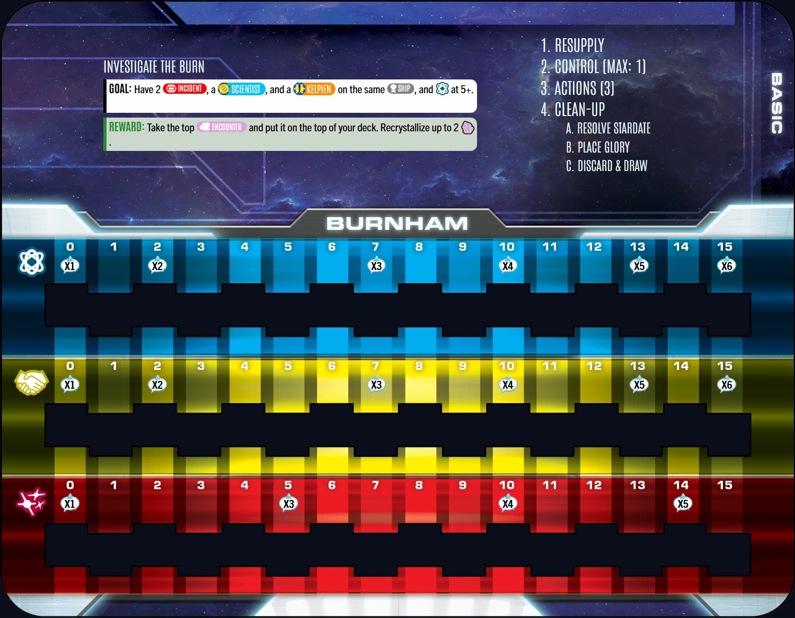
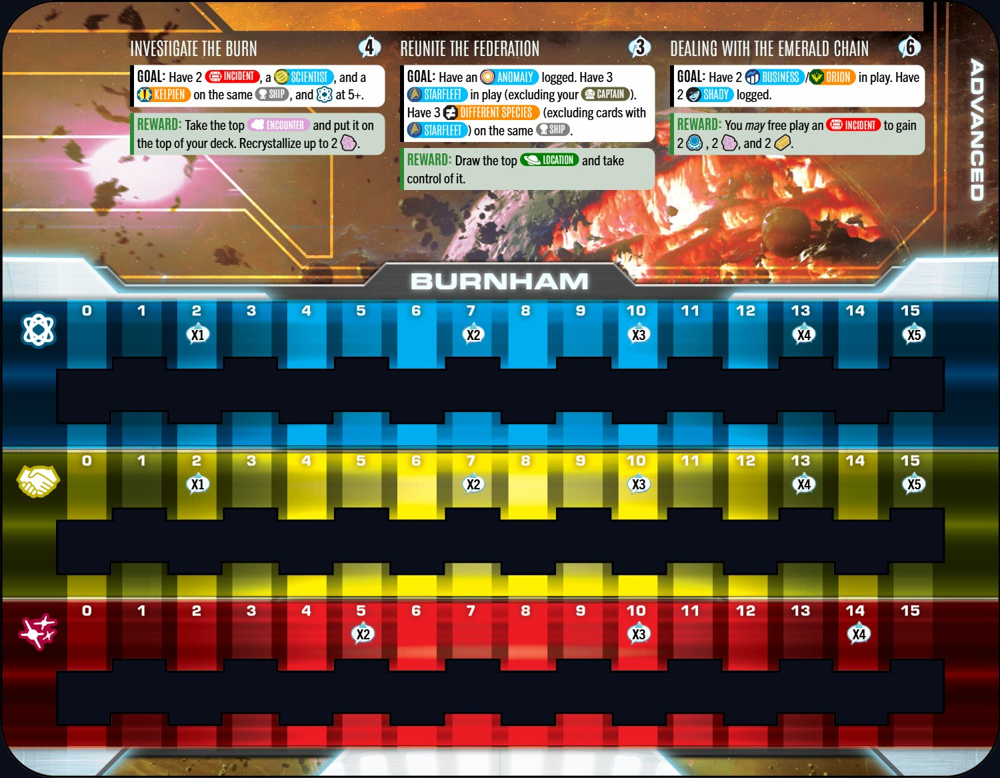
Missions
Her base side mission is called Investigate the Burn, which requires five or more Research and two Incidents, a Scientist, and a Kelpien on the same ship. I find this mission incredibly easy because you not only have two Scientists and a Kelpien in your deck, but two Incidents are not hard to get at all, nor are they a big deal to deal with. I can pretty easily get this mission done on turn two, three at the latest. This is great, because you get to take the top Encounter (Early printing erroneously says "Discovery") and put it on top of her deck and recrystallize two Dilithium (more on that in a few). Burnham's Advanced side gives you four points for investigating the Burn in addition to the reward.
Her second mission is to Reunite the Federation, which requires a logged Anomaly, three Starfleet traits in play (excluding your captain), and three different species traits, excluding cards with Starfleet, on the same ship. That seems like a lot, but the main difficulty will be deciding which Anomaly to log. You do have your starting ship, but there are reasons to avoid logging the Discovery-A. In addition to three points, you also get to draw the top location and take control of it, which is a fantastic reward.
The third mission is Dealing With The Emerald Chain, which requires two Business or Orion traits in play, and to have two Shady traits logged. If you can get the Emerald Chain Ally, this is pretty easy, though finding two Business traits from locations or Booker isn't hard. But you will need to intentionally find two shady market cards in order to get this accomplished, so this may be a later game mission. Its reward is six points, and you may free play an incident to gain two glory, two Dilithium, and two Latinum, which is another very solid reward.
I find that I usually get two out of three missions accomplished per game, with the Emerald Chain mission getting accomplished a little less than half the time.
↑ back to topCaptain Card & Starting Components
Burnham has five away teams, the Human, Scientist and Starfleet traits, and scores for Research Focus. She has a passive ability wherein instead of putting one glory from the Stardate card during each clean-up step, you instead remove a glory from the Stardate card and play two Dilithium on a card in the market instead. She also has an activation that requires her to spend three Dilithium to gain an Ally and a glory, which will be hard because Dilithium will be sparse.
Burnham is the only captain so far with a Status card. Inert Dilithium starts the game in-play and has three passive abilities. The first increases your hand size by one (always helpful). The second limits your Dilithium engine by requiring any gained Dilithium (except from the market) be placed on Inert Dilithium, unable to be spent for any reason. Some cards in Burnham's deck allow you to recrystallize Dilithium, at which point it can be moved from Inert Dilithium to your supply. You're also not allowed to spend Glory as Dilithium, which is understandably limiting. This is the main mechanism with Burnham's deck: management of sparse Dilithium while working to remove your Inert Dilithium status.
Also, per page 35 of the rulebook, if your opponent steals your Dilithium, you can give it to them from the Inert Dilithium card first. If you steal Dilithium from your opponent, it goes to your supply because "stealing" is not "gaining."
You do have an Incident (Subspace Phenomenon) which starts the game shuffled into the Incident Deck. This is nice because there's a few cards in Burnham's deck that require you to take Incidents and it's nice to have some extra room to avoid the Burn (which is kind of thematically weird since the whole reason for inert dilithium is because the Burn already happened, but hey, I get it).
Finally, you start with The U.S.S. Discovery-A deployed. It has one Research and one Influence skill as well as the Anomaly and Starfleet traits. The Discovery-A is one of the more unique ships, as its Play action lets you deploy the ship and discard a card to free play a person card. This can start to combo in some pretty great ways, if you time it correctly. Its warp activation lets you warp Discovery-A, then refresh it, which effectively lets you warp an unlimited amount of times as long as you don't use any other activations or exhaust the ship some other way. There is the standard beaming Activation (discard a card to beam a card), and the standard duty officer promotion (promote a Person from your hand to Duty Officer). Discovery-A also has a Passive ability that prevents your Dilithium from being solo, which is a nice benefit since you don't have much to begin with. You do start the game with one Dilithium in your supply, but any other Dilithium you get (from solo campaign benefits mostly) start on Inert Dilithium.
↑ back to top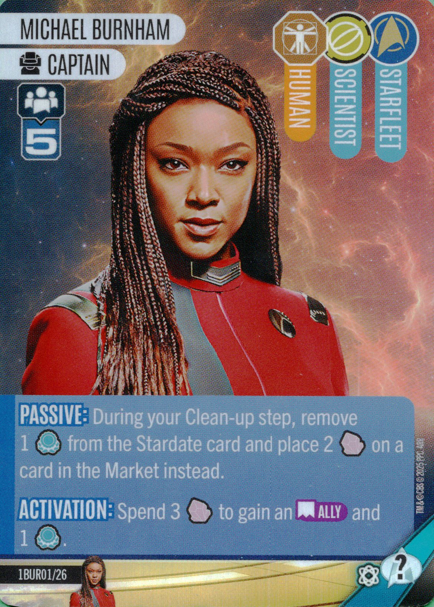
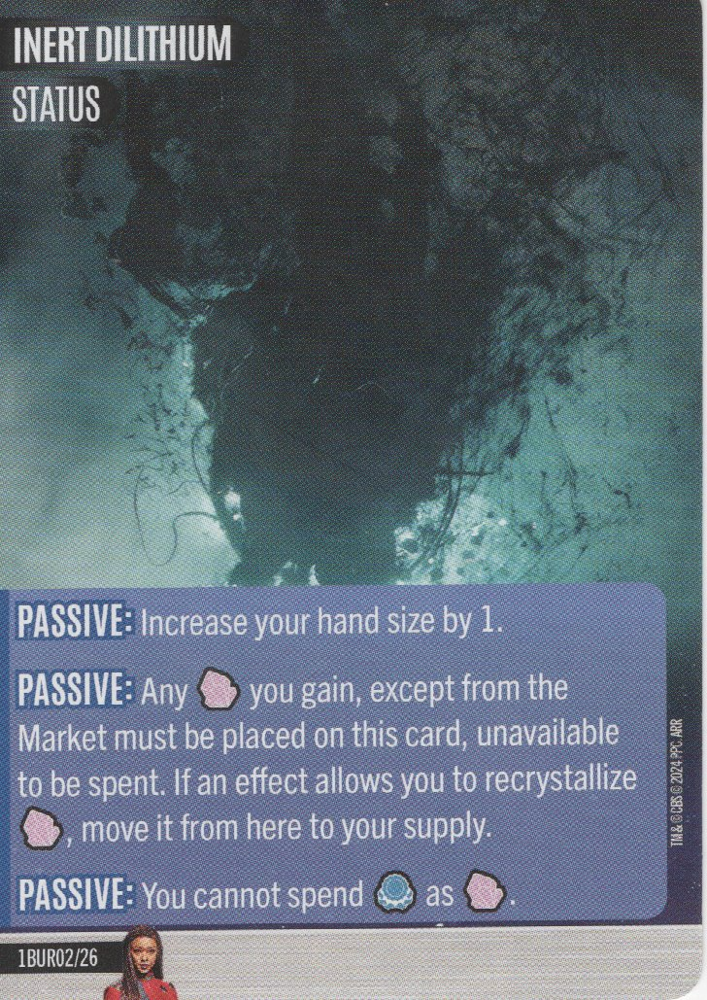
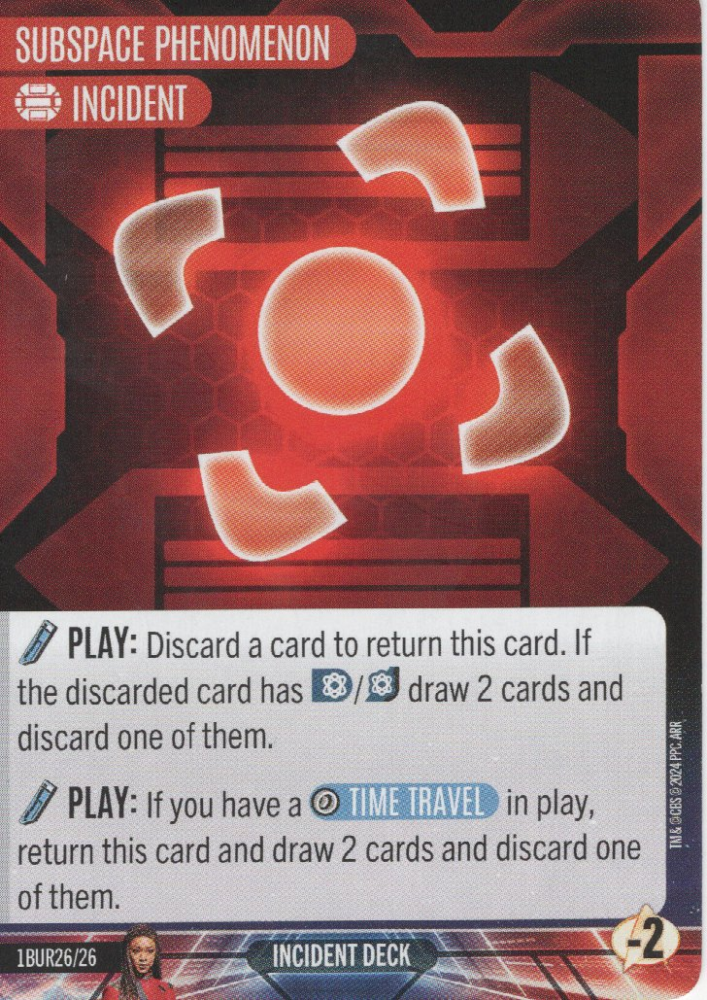
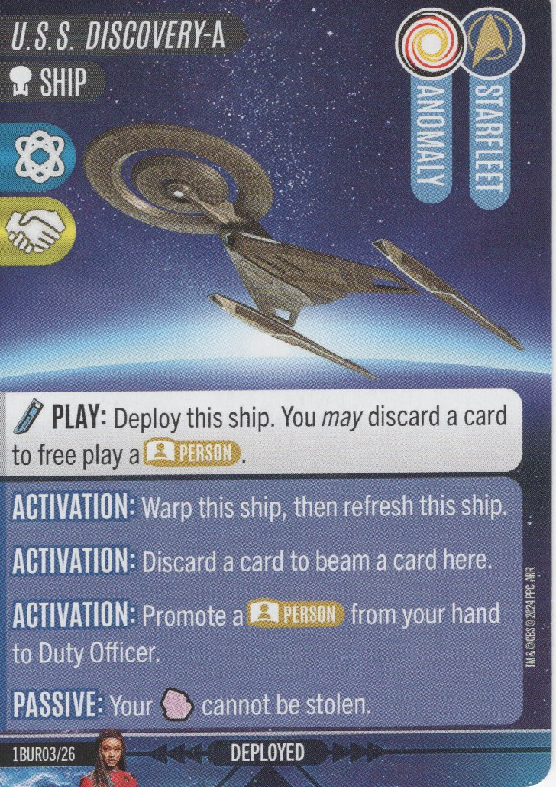
Burnham's Available Cards
Burnham has 10 available cards that can make up her starting hand (which again will be six cards per Burnham's special rules). There are six Person cards and four Directives. I'll get into my preferred starting strategies after going over the basics of these cards and giving my thoughts.
↑ back to topDirectives
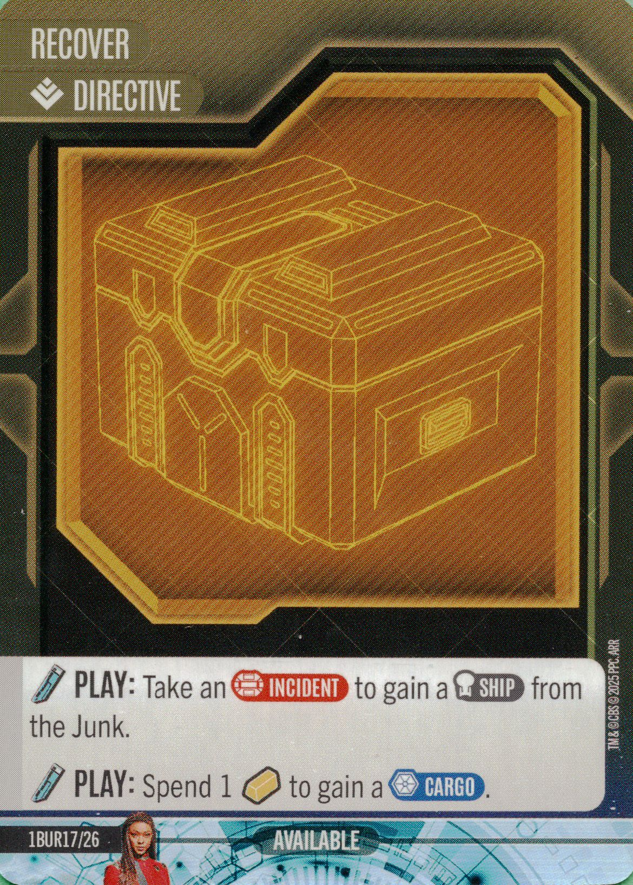
Recover (Directive) — Burnham has less options for recruiting Ships with a decimated Starfleet, so Recover allows you to take an Incident to gain a ship from the Junk, or spend one Latinum to gain a Cargo. Against the bot, there probably aren't going to be any ship options for a little while, unless you manage to junk a market card. Otherwise you may need to wait for the first Stardate card market sweep for some option (until we start combining boxes with the expansion rules for combining boxes and junking some market cards at the start). Latinum gain is much easier than Dilithium gain so gaining cargo should be no issue if that's your preferred use of Recover.
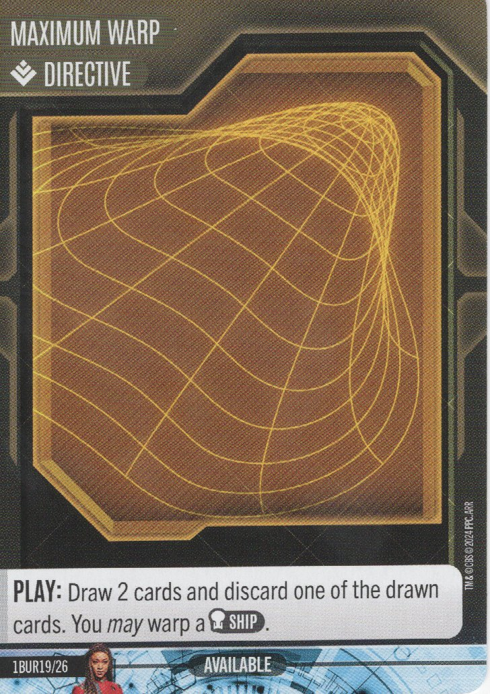
Maximum Warp (Directive) — A free-play directive, Maximum Warp lets you draw two cards, discard one of them, and you may warp a ship. It's part of the directive for Set a Course, just without the ability to send away teams. I find it useful for drawing cards, and for warping ships that aren't the Discovery-A. The nicest part is that it's a free-play action, so it mostly gives you more options.
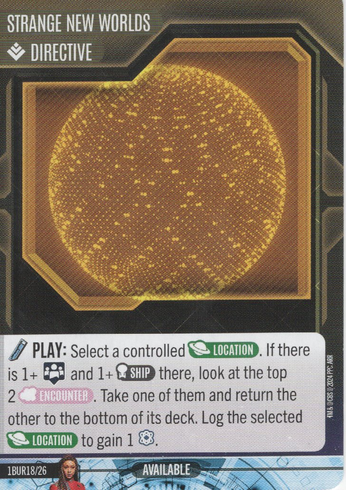
Strange New Worlds (Directive) — The standard method for Starfleet encounter gain, you can choose between the top two encounters and gain one on the Research track as long as you log a controlled location with at least one ship and away team present. Not much more to mention here other than to comment that it's not the only method of encounter gain accessible to Burnham, but it is reliable and gives options.
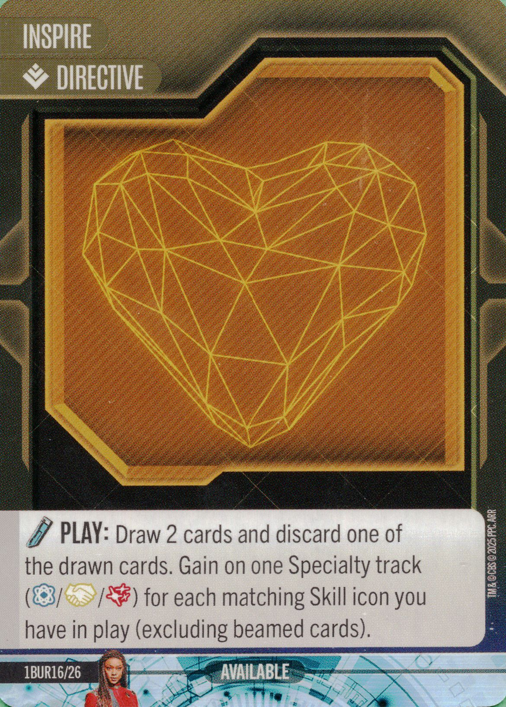
Inspire (Directive) — Since Burnham can't gain too much Dilithium too fast, she has a (for now) custom Directive named Inspire that replaces the standard Utilize Directive. First, she draws two cards and discards one of them. Then, you can move up one specialty track based on each matching Skill icon you have in play, same as Utilize's second Play Action. It's a clever way to prevent massive Dilithium gain while still retaining the necessity of Utilize for track advancement.
↑ back to topPerson Cards
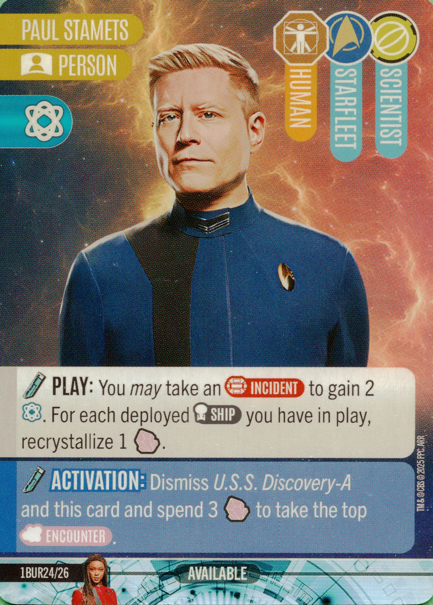
Paul Stamets (Person) — Stamets is the pioneer of spore drive travel using himself (or early on, a giant tardigrade) as an organic navigation conduit for non-dilithium powered travel. As such, he's got the Scientist, Human, and Starfleet traits, along with a Research Skill. His Play action lets him gain two on the Research track at the cost of taking an Incident. He also recrystallizes one Dilithium for every deployed ship you have in play. His Activation costs an action token, and at the cost of dismissing the Discovery-A and spending three Dilithium you take the top encounter. You can't choose, and its cost is pretty steep, which makes it worse than Strange New Worlds in most respects, but it's still a great way to get another encounter if circumstances work out. However, I usually prefer to use him for a different purpose early, which we'll discuss further along.
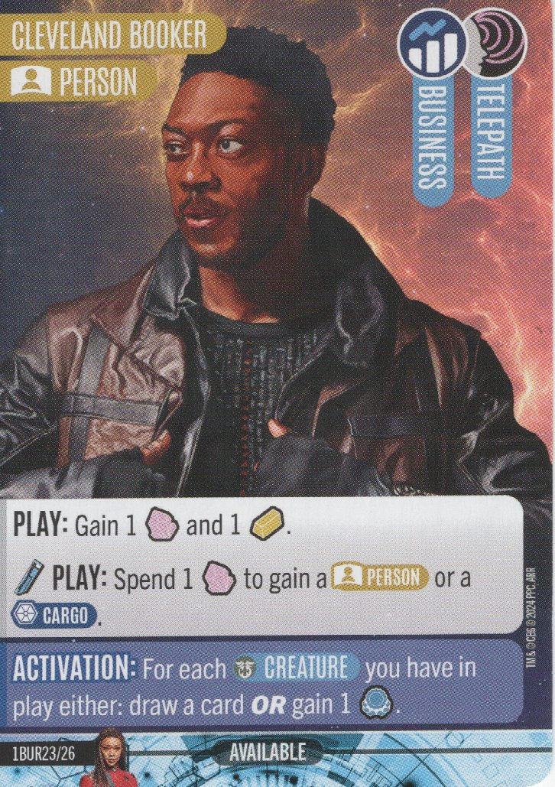
Cleveland Booker (Person) — Booker, despite appearing human, is actually a Kwejian, and is able to telepathically communicate with some plants and animals. He thus gets the Telepath trait along with the Business trait, as he really only has a connection to Michael Burnham and isn't loyal to what's left of Starfleet. He has a free play action that gains you a Dilithium (inert, of course) and Latinum. He also has a Play action where you can spend one Dilithium to gain a Person or Cargo. This is your only way to gain a Person in your available (or reserve) cards, and the only consistently repeatable way to gain a person (Earth's Control ability gives you a single person), so keep that in mind. His Activation lets you either draw a card or gain a Glory for each Creature in play. There's two of those in Burnham's deck, and a few in the cargo, so using this will really come down to how many creature cards you have.
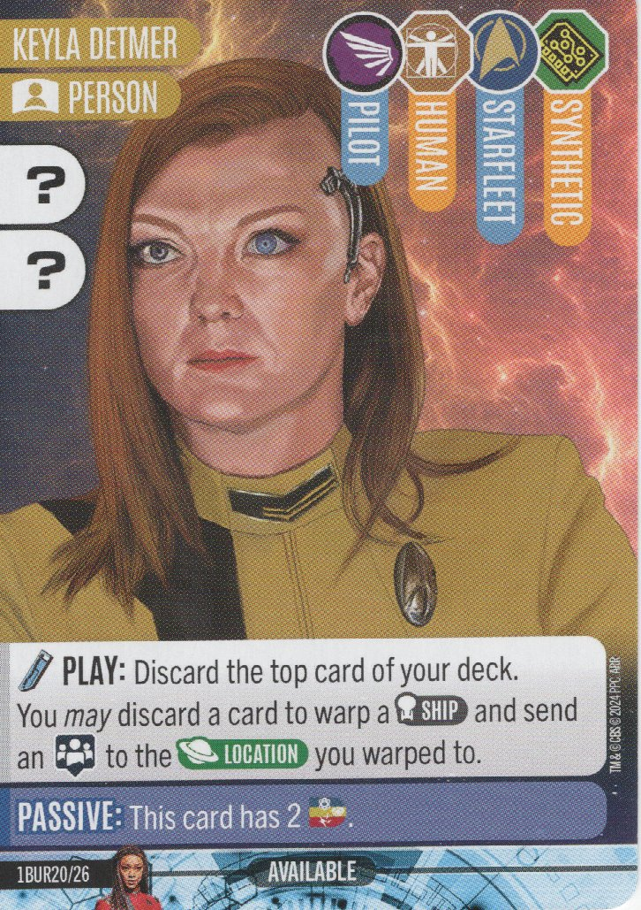
Keyla Detmer (Person) — At the time period of Discovery season three, Detmer was the helmsman of the U.S.S. Discovery-A, and retained her synthetic implants from unseen battles fought during the Federation-Klingon war. She gets the Human, Synthetic, Starfleet, and Pilot traits. Her Play action discards the top card of your deck and lets you discard a card to warp a ship and send an Away team to the location you warped to. This can be a good away team option, especially if you know you can use Owosekun in the same turn. However, my personal preference is to put Detmer at the Duty Officer position for her two wild Skills, which only count when she is promoted to duty officer (her passive abilities would not otherwise take effect, unless you happened to have Wesley Crusher on duty). She's a great way to get your Research and Influence boosted early in the game to avoid issues later on when enlisting Developments.
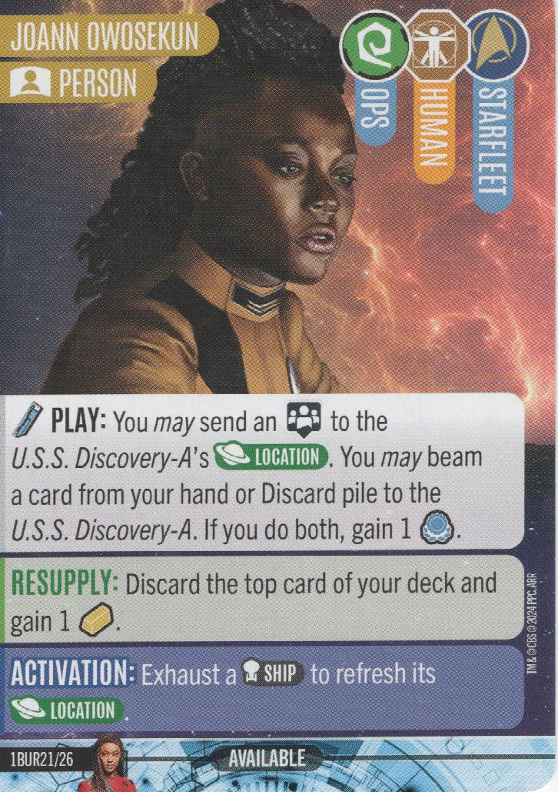
Joann Owosekun (Person) — Owosekun has the Ops, Human and Starfleet traits, per her role as operations officer on the Discovery. The Memory Alpha article on her indicates that it's somewhat incomplete (didn't Discovery end over a year ago?) but I thought the most interesting tidbit was that her family were Luddites who rejected technology, but she felt compelled to join Starfleet regardless. Her Play action is one of my favorites in this deck, as it lets you send an away team to the Discovery-A's location and beam a card from your hand or discard pile to the Discovery A. And if you do both, you gain a Glory. This is great for speed-running Burnham's first mission, as you can get three cards onto Discovery fairly easily (more on that below). She has a Resupply action that discards the top card of your deck for a Latinum (like Riker). Finally, her Activation lets you exhaust a ship to refresh its location, which can come in handy with quite a few starting/advanced locations as well as Earth in Burnham's Developments.
↑ back to top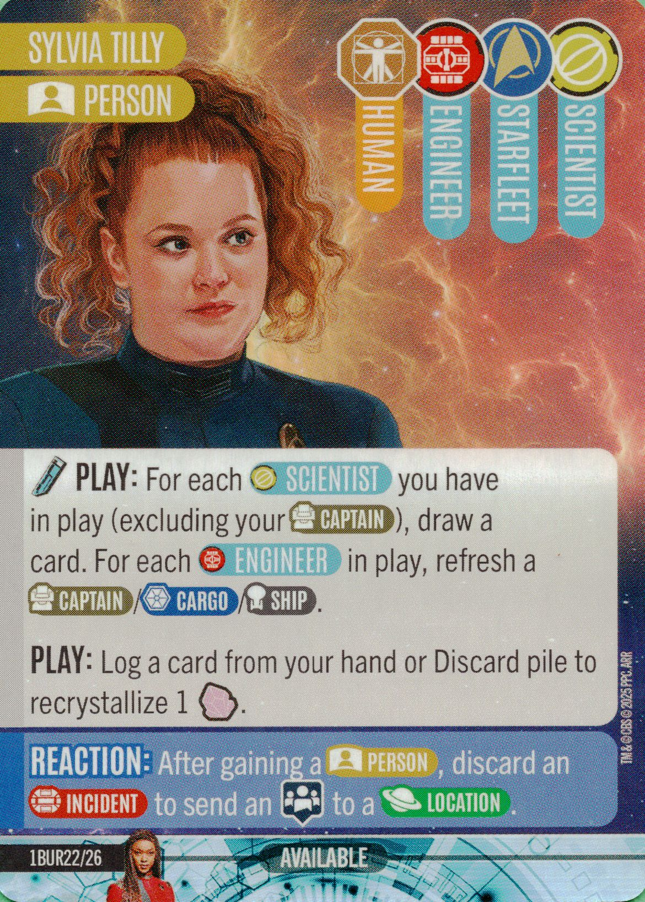
Sylvia Tilly (Person) — Unless I'm really misunderstanding Memory Alpha, Tilly is the first officer of Discovery in season three, but starts the show as an optimistic Scientist, Engineer, and Cadet, which explains those traits along with her Starfleet and Human traits. She has two Play actions, the first of which lets you draw a card for each Scientist card in play (besides Burnham) and refresh either your Captain, a Cargo, or a Ship for each Engineer you have in play. This can be beneficial in so many different ways, but my primary use for Tilly is card-draw, especially if you can get Amargosa station controlled early on. Refreshing multiple ships due to the second part of this action is likewise beneficial. Her other Play action is free and allows you to log a card from your hand or discard pile to recrystallize one Dilithium, which is helpful not only when you need Dilithium but also when you need to thin out your deck. Her Reaction triggers when you gain a Person, at which time you can discard an Incident to send an away team to a location. I'll be honest, I've never once used this, and believe me, I looked for opportunities for it to make sense in my games. That doesn't mean it couldn't be useful, but for one away team with so many requirements, I find her Play actions are much more necessary and I thus prefer to keep her in play.
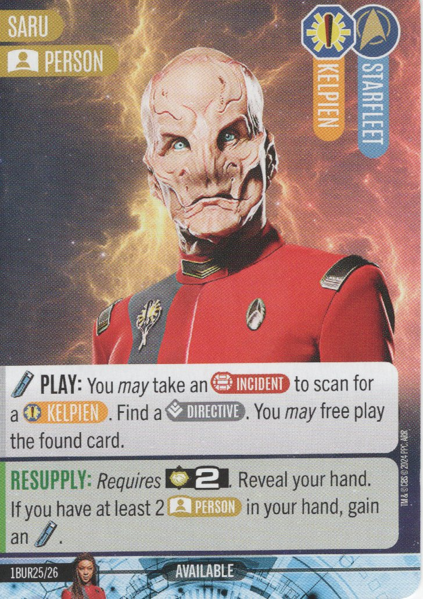
Saru (Person) — Doug Jones as a Star Trek alien was such a great idea I'm shocked it took until 2017 for it to happen. He got to develop the Kelpiens and bring a new alien to Starfleet, which is why Saru's card has the Starfleet and Kelpien traits. His Play action is really intriguing, because you may take an Incident to scan for a Kelpien, which based on the two Kelpiens in the core box market (Su'kal in the Person deck and the Ally Kelpiens) is a no-brainer as both cards help you return Incidents. Then you have to find a directive, and you may free play the found card. This is great because it not only allows you to find a card in your deck (or play a card from your hand) but it makes Saru an automatic two-for-one every time. The big question on his card is whether it's worth using him after taking two Kelpiens, and usually my answer is no because the glory for an Incident trade still costs an action token. However, later in the game his Resupply can be useful as it provides an extra action so long as you have two Influence and two Person cards in your hand. This may be the best Available Person (and maybe Card) in the core box. It's nearly always useful regardless of the situation and provides two of the four requirements for completing your first mission.
↑ back to topStarting Hand Strategies
There's a lot of different ways you can take Burnham's deck, but let's start with the card-draw potential. Both Inspire and Maximum Warp allow you to draw two cards, discarding one of them, and you can get one or two cards from playing Tilly. This means that if these cards are in your starting hand (or better, if Inspire isn't and Saru is), you'll be nearly going through your deck, or even getting through it, before the end of turn one. For a deck with only four reserve cards, this is a great way to start the game and can give you a lot of momentum over your opponents.
Now we'll shift to the worst-case scenario. Let's say that you have Maximum Warp, Inspire, Tilly, and Saru in your deck after your initial draw. You can still make a point of doing something with the remaining cards. Stamets, Booker, and Owosekun all have Activations that aren't useful on the second turn of the game (Booker's might be, but only if you get Grudge as your first Reserve card). That leaves Detmer, who is my typical choice for Duty Officer even if you don't get this opening hand. You're going to need to be able to enlist developments pretty quick, and several of them have Research or Influence restrictions. Therefore, getting Research high early (up to twelve) will be important. Detmer's ability helps you achieve this goal, and is flexible unlike Stamets' single Research skill.
Now, you want to get Discovery warped first to your ideal location, because once it's exhausted you won't be able to warp and refresh. From there, you need to decide whether you want a person or cargo from the market. If you just want a cargo, maybe start by free playing Booker for an inert Dilithium and Latinum, then Play Stamets to gain two Research and get one of those Dilithium recrystallized, Recover a cargo (or maybe a ship if you're going second and your opponent junked a ship on turn one), and play Owosekun to get a glory and send an away team, and beam anything that will help you complete your first mission to Discovery. It's quite frankly the worst first turn Burnham can have, and it's really not that bad. Alternatively you could use Detmer's play action before Owosekun to get two away teams out, and then either beam Recover or Stamets to discovery, playing the other and free playing Booker. If you played Stamets, you could also beam the Incident he takes to Discovery by discarding Strange New Worlds. It's a lot of options but I'm trying to be thorough here.
If you alternatively have any of the cards that let you draw more cards, you're golden. Your biggest downside will be figuring out what to discard when you have to draw two cards and discard one, and that can put you in the roughest position. I'm going to outline my ideal starting turn and then play on some variations.
I'd want to start with Saru for sure, and I'd feel better if I had Owosekun and Detmer. I am hoping NOT to have Inspire in my hand, because that's the Directive I'm hoping to free play, and even though I can find and free play it from my hand I'd rather get the extra card draw by finding it in my deck. I'd start by warping Discovery to the location of my choice, then promoting Detmer to Duty Officer. I'd then want to use my first Play action to play Saru, taking an Incident and gaining a Kelpien, and unless I have no choice, I'm going to take the Ally Kelpiens for both points and the practicality of their self-log. I then find Inspire, free play it, and draw two cards discarding one and moving up three on the Research track. I am willing, typically, to discard Strange New Worlds or Recover, but I definitely don't want to discard Tilly or Owosekun if they're coming up. If I've got Owosekun, I'm using her ability to send an away team to Discovery's location and I'm beaming the Kelpien I gained to my discard pile to Discovery or Stamets. I then use my last action token to play Tilly, getting me another card, or two if I beamed Stamets, and refreshing Discovery. At that point I'm 1 card into the Reserve, and if I've got Grudge then I have even more options, which we can get into below. At this point there's one more beam that can happen (usually the Incident or the gained Kelpien) and you'll still be able to use Booker's free play action unless you had to discard him. There's small variations on this play, but this has been consistently the plan that has yielded me the best results. You just have to get the timing right for exhausting Discovery and beaming cards.
Alternative Duty Officer recommendations are limited. As indicated, Booker, Stamets and Owosekun aren't great early options for Duty Officer. Saru is far more useful for his Play action and you don't really have a way to get to two Influence without Detmer as Duty Officer, which means you can't use Saru. Tilly is an option, specifically if you plan to use Booker's action to gain a Person or Saru's action to gain Su'kal. It'll give you another away team and all you need to do is discard an Incident, which you may have either from Stamets or Saru's Play action. I think that trying to get at least one away team out is important, but I think that it should be via Owosekun, that way you can get one or two beaming opportunities at the same time, not to mention gaining Glory.
Another reminder that you will be getting Book's ship for another away team and location control, so you can focus on trying to get Burnham's first mission completed now and control locations later. Between Saru, Recover, and Booker, you've got ways to get Person or Cargo cards from the market, but I don't know if I'd overload my deck early on. Grabbing one Kelpien and focusing on your beaming is my recommended way to go. In many ways it's similar to Sela's deck in that I really do think there's an optimal play. If you've had success, either accidentally or consistently, with another option, please let me know. As we get into these higher difficulty decks, it's entirely possible I'm missing something completely obvious.
↑ back to topBurnham's Reserve Cards
Burnham has four reserve cards consisting of one Ship, one Location, One Person, and one Cargo. I'll review them individually then discuss.
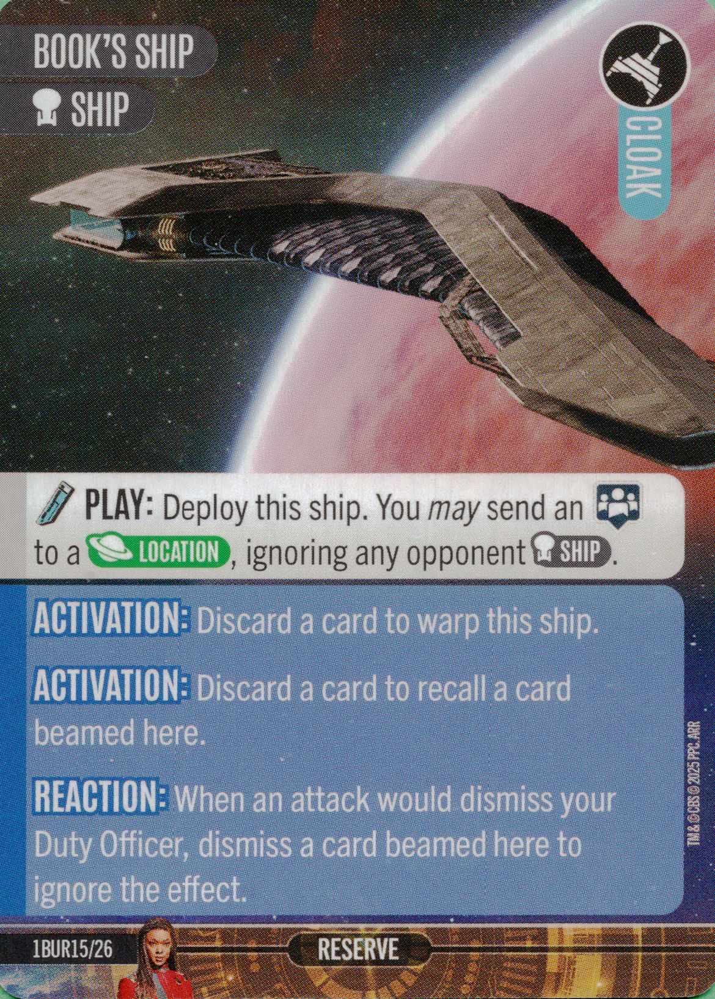
Book's Ship (Ship) — Other than being the ship Cleveland Booker uses, I don't have too much to say about the thematic except that it's such a different set of activations than we usually see for a Ship. The Play action is standard for the Cloak trait, which deploys the ship and sends an away team ignoring opponent ships. You then have three table operations. The first Activation allows you to warp if you discard a card. Considering Burnham's capacity for gaining cards and not Dilithium, this isn't that bad. The second Activation allows you to discard a card to recall a card. There's no way to beam cards here without using Grudge, so you may need to recall Grudge to keep a beaming system going, if you're trying to beam things to Book's Ship (you may just use it for location control). Finally, you have a reaction that allows you to discard a card beamed here to ignore the effect of an attack that would dismiss your duty officer. Useful, if you've got a card beamed and if your opponent just won't stop with the dismissing.
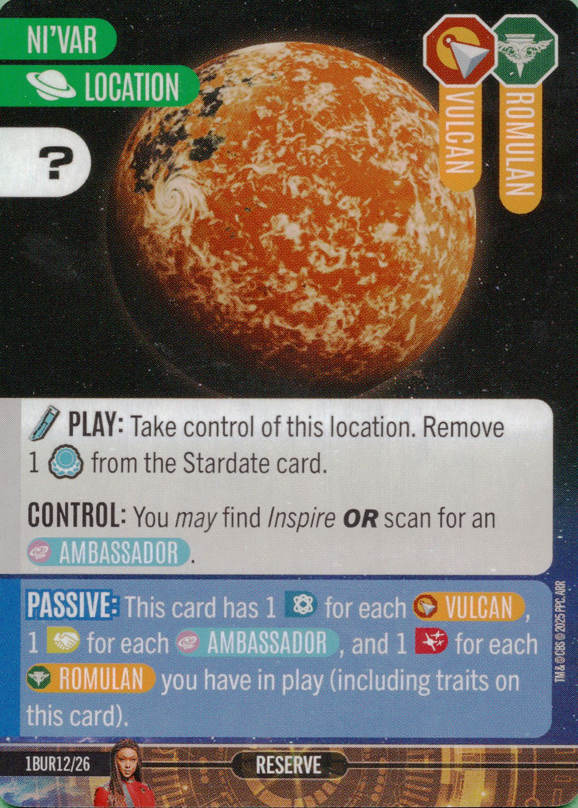
Ni'Var (Location) — Go forward far enough, and Spock's vision of Vulcan united (and renamed) is reality, giving it the Vulcan and Romulan traits. When you play and control Ni'Var, you remove one glory from the Stardate card and you can either find Inspire or scan for an Ambassador. Usually, I'm going to recommend Ambassador to get the Enterprise C, but you can consider going after Riva, Lwaxana Troi, or Ambassador Kamarag. If none of that sounds appealing, you can simply find Inspire. The passive ability of Ni'Var gives it a research skill for every Vulcan trait, Influence skill for every Ambassador trait, and one Military skill for each Romulan trait.
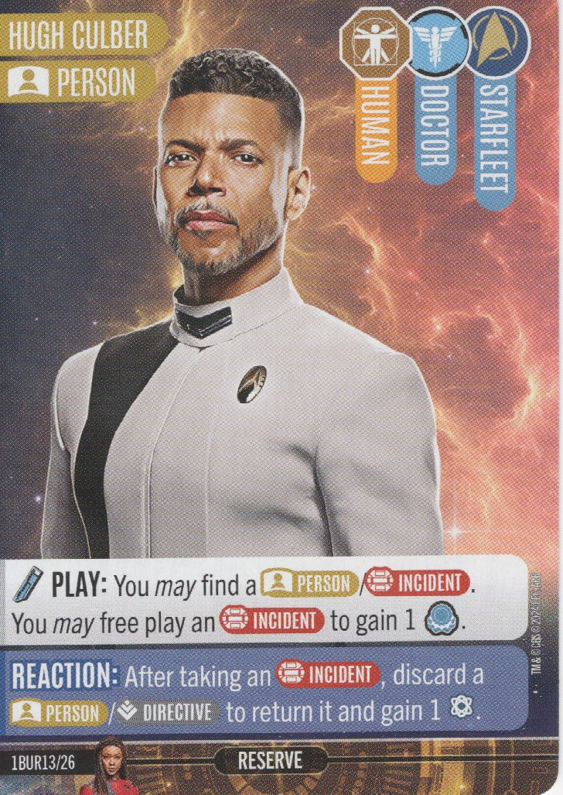
Hugh Culber (Person) — Discovery's Chief Medical officer, Culber gets the Starfleet, Human, and Doctor traits. His Play action lets you find a Person or an Incident, then free play an Incident to gain a Glory. In all honesty, I'm not sure how much you'll need him since you can deal with four Incidents with the Kelpiens you have, but if you go above four Incidents he's certainly effective. His Reaction occurs when you take an Incident, and you can discard a Person or Directive to return the incident and gain a Research. This can be effective especially if you're using Recover to grab ships repeatedly, but not usually at the cost of keeping Detmer at Duty Officer early game.
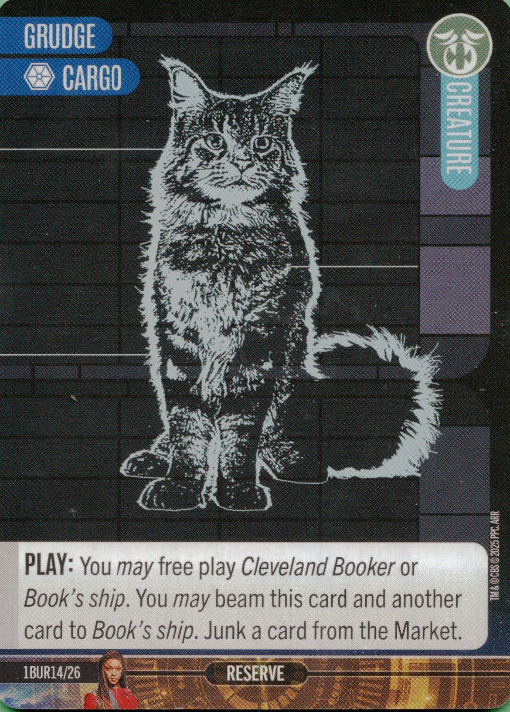
Grudge (Cargo) — Booker has an affinity for his cat, hence his relationship to creatures in his activation and Grudge's free-play ability. Grudge is not only a free to play cargo, but you can use her to free play Book's Ship or Booker himself. Then you can beam Grudge and another card to Book's ship, which if nothing else is helpful for thinning the deck. Since you can recall cards from Book's ship, it can start to build up an engine of beaming multiple cards for (almost) free. You also junk a market card, which is great for getting something good out of your opponent's hands.
The hard part about Burnham's Reserve cards is that they're a little interdependent. Grudge can be partially used before Book's Ship comes along, but you'll want the ship for the full effect. Book's Ship can't get anything beamed to it until Grudge comes out. Culber is good but would probably prefer to get him later rather than earlier since you'll have ways of dealing with Incidents and you need at least two of them to complete your mission. And Ni'Var is fine but can sometimes take an action token that you'd rather use for something else, and I've had times where I have to keep it in my hand to play on a subsequent turn. I would usually hope for Book's Ship, then Grudge, then Ni'Var, then Culber if I was hoping for an ideal order. Good news is that with only four reserve cards, you'll get through them fast. Of course, as we're about to discuss, that can be a double edged sword.
↑ back to topBurnham's Development Cards
Burnham has eight Development cards, including four Persons, one Cargo, two locations, and one ship. The costs here are more unique than most of the core box decks as well, and that can make a difference depending on how you've approached the early game.
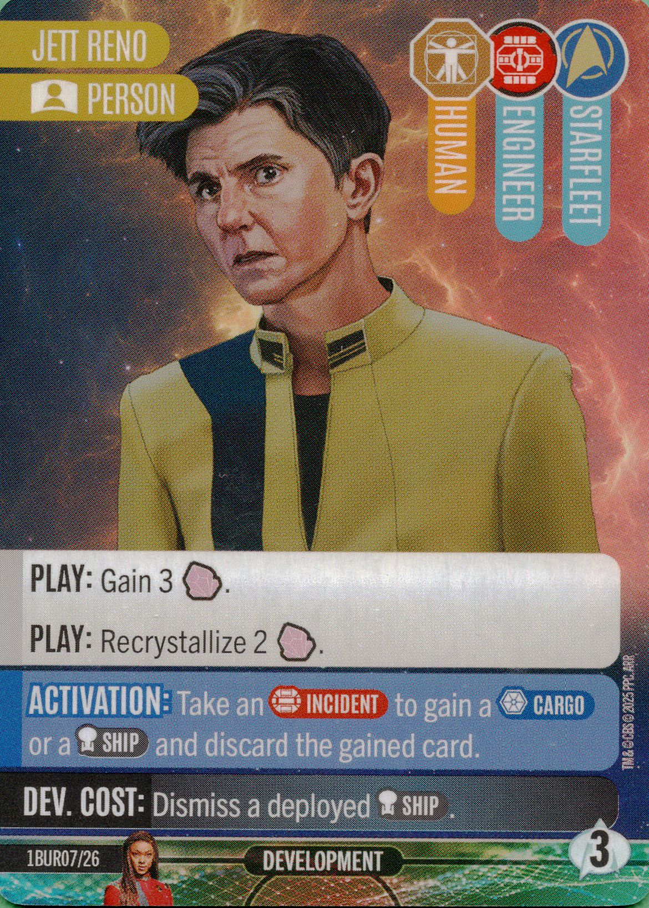
Jett Reno (Person) (Dev Cost: Dismiss a Deployed Ship) — Played by deadpan comedian Tig Notaro, Jett Reno has the Human, Starfleet, and Engineering traits. She has two free Play actions, one which gives you three Dilithium and one which lets you recrystallize two Dilithium. Her Activation requires you to Take an Incident, then you gain and discard a cargo or a ship. So, when to get Reno? When you're desperate for more Dilithium and don't have a good way to get/recrystallize more, or can't yet get Theta Zeta. Or, if you just need to have access to more Cargo/Ships and would rather have her as a duty officer. I usually find myself getting her fairly early and then I just continually use her to gain Dilithium, which will hopefully be used with Burnham's Activation to gain Ally cards and a point, or will themselves be worth 1.5 points by game end via Delta Zeta. Reno scores three points.
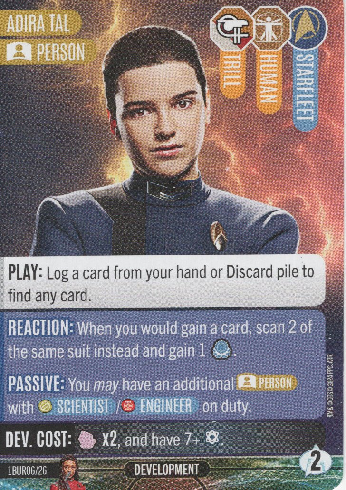
Adira Tal (Person) (Dev Cost: 2 Dilithium and 7 Research) — The seventh host of the Trill Tal, Adira serves as a sciences ensign with the Starfleet, Human, and Trill traits. Adira's Play action is free, and lets you log a card from your hand or discard pile to find any card. This is extremely versatile and usually I go with this Play action as opposed to using Adira as a duty officer, mostly because it both thins your deck and gives you control over what to Find and play next. Passively, you can have an additional person with Scientist or Engineer traits on duty. Adira's reaction lets you scan two of the same suit and gain a glory when you would gain a card, which makes sense because both Jadzia and Curzon Dax have scanning activations as well. I still recommend using Adira's Play ability early and often. Adira scores two points. Watch out for that development cost as well, and keep pushing the research track early game.
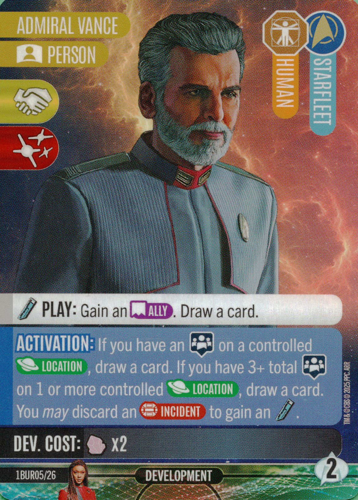
Admiral Vance (Person) (Dev Cost: 2 Dilithium) — The head of an Earth-less Starfleet, Admiral Vance gets the Starfleet and Human traits, as well as an Influence and Military skill. Vance's play action gains you an Ally and draws a card, which is good unless the Ally deck is depleted (which has happened a lot by the time I'd consider getting him out). Vance's Activation is pretty much the standard card-drawing activation that you'd see on Farpoint Station or Andoria, only it's on a Person card. If you have an away team on a controlled location, you can draw a card. If you have three or more away teams on one or more location, you draw a card. And you may discard an incident to gain an action. It's that last one that makes this really worth it, if you can promote him before game-end and make use of his Activations. Vance scores two points.
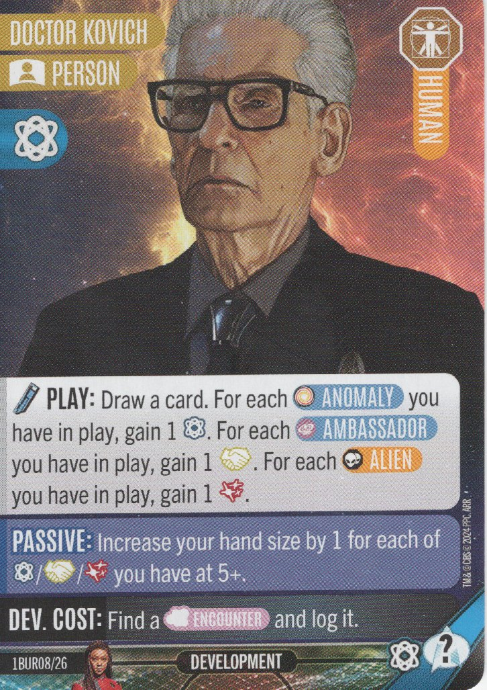
Doctor Kovich (Person) (Dev Cost: Find an Encounter and log it) — Should he have the Human trait? More or less, probably. Doctor Kovich has a Research skill and scores for Research Focus. His play action lets you draw a card and gain one research for each Anomaly in play, one Influence for each Ambassador in play, and one military for each Alien in play. If you've got a lot of those, or a lot of wildcards, that can be fantastic. Please note that you can only use each wildcard for one trait for each Operation, so it's not like a wildcard will count as all three traits. His Passive is also quite good, and it increases your hand size for each track you have higher than five, and that should be something you're shooting for on Research and Influence at least. Combined with your status, that can be a hand size of eight before you get Theta Zeta out. Last note: his Development cost can be difficult to stomach, but it's also an opportunity. If you have Koala, or for some reason an unplayed Guardian of Forever, you can log them to help you with your second mission (or third, in the case of the Koala).
↑ back to top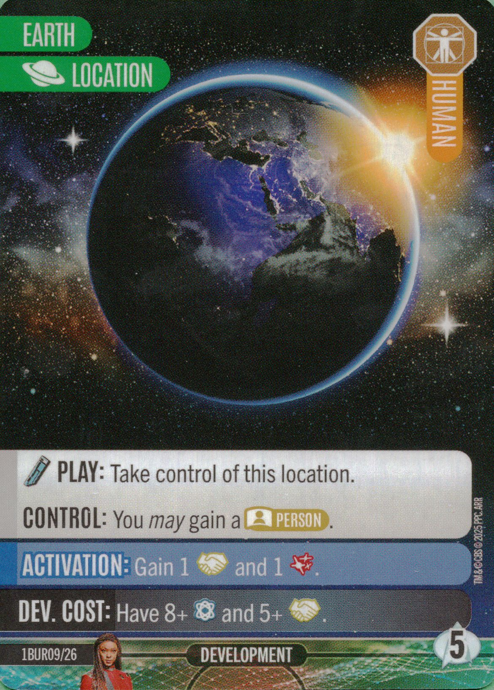
Earth (Location) (Dev Cost: Have 8+ Research and 5+ Influence) — Earth in 3188 has left the Federation following the Burn. Bummer. But you can bring them back as Burnham by simply… (checks notes)...playing this card and taking control of the location. Anyway, upon control, you may (and should) gain a person card. Then, every turn (and multiple times if you can refresh) you can use Earth's Activation to gain an Influence and a Military. Since you have to have Influence at five to even pull this off, you're not going to get to use this very many times a game, and there may be diminishing returns when you do. But it's also five points and worth at least trying to get regardless of how often you use it.
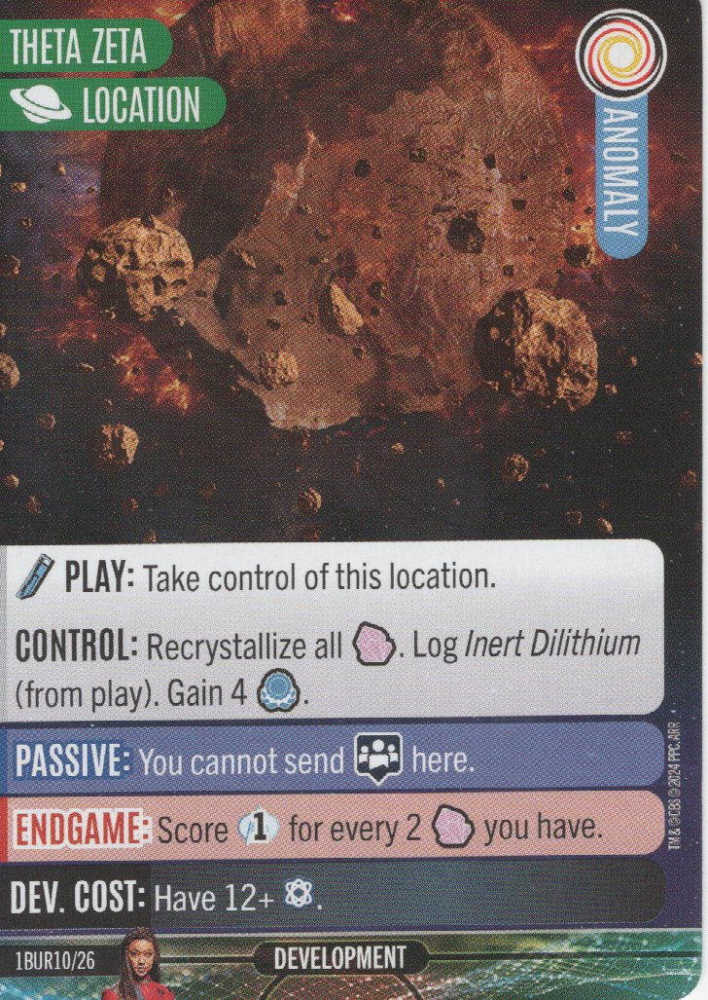
Theta Zeta (Location) (Dev Cost: Have 12+ Research) — Theta Zeta is the McGuffin location of season 3 of Discovery, and if you can figure out what's going on there via playing and controlling it, you can Recrystallize all your inert Dilithium, log your status card, and gain four Glory. This can sometimes trigger endgame, but regardless it's going to speed things up. There's a Passive that prevents you from sending Away Teams to Theta Zeta, and you'll score a point for every two Dilithium you have at endgame. When you log Inert Dilithium, please note that you'll lose your extra status card draw, but your Dilithium you gain will go straight to your supply to be used. Also, you'll continue to remove a glory from the Stardate card, placing Dilithium on market cards instead of Glory. This card doesn't score any additional printed points.
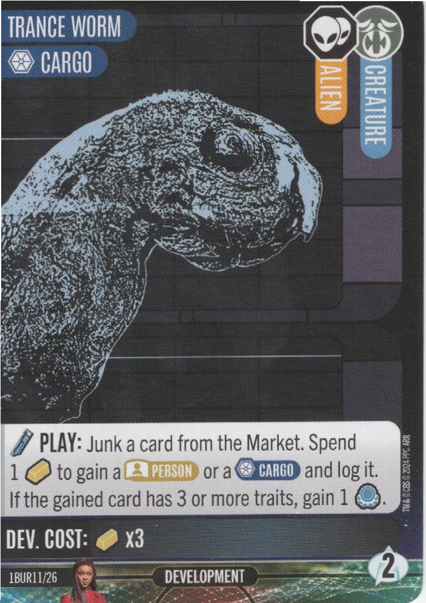
Trance Worm (Cargo) (Dev Cost: 3 Latinum) — Having not watched season 3 yet, I was limited to Memory Alpha pictures, which underscored that the art here doesn't fully communicate how large these are (large enough to eat people!). With the Alien and Creature traits, the Trance Worm's Play action has you junk a market card, spend a Latinum to gain a person or cargo then immediately log that card. If the card you gained and logged has three or more traits, you gain a glory. I can say that this is my least favorite card in Burnham's developments. You can't gain anything for its usefulness, and you're limited to Person and Cargo cards, so the values are minimal unless you're grabbing a focus card. The points gained don't clog your deck, so late game you could grab blue focus cards for the points, but beyond that it's not terribly useful, unless I'm missing something major. Booker can gain some extra card draw or Glory from his Activation when it's in play, but that's so specific that if you know you're going to have Booker out, you can work towards that. Otherwise there's much more valuable stuff in here.
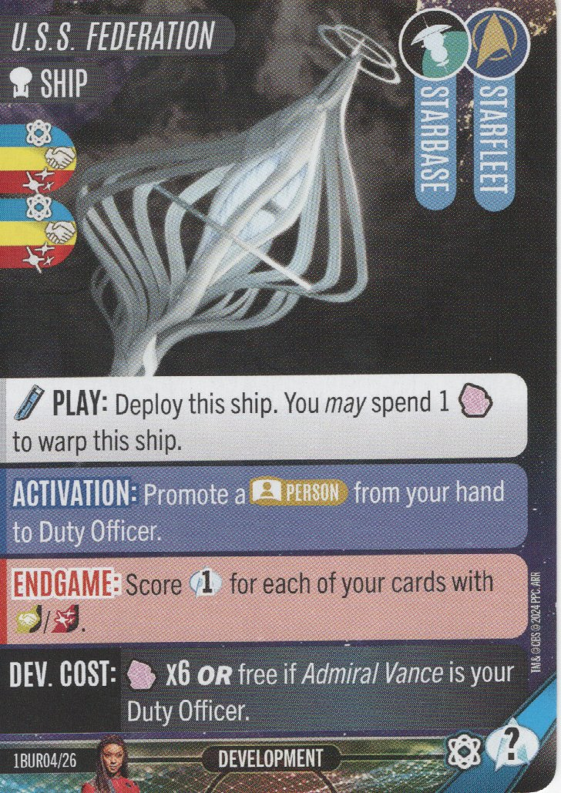
U.S.S. Federation (Ship) (Dev Cost: 6 Dilithium or free if Admiral Vance is your Duty Officer) — The headquarters of a deeply fractured Federation, it has two wild skills and the Starfleet and Starbase traits. Its Play action lets you deploy and warp it at the cost of one Dilithium. Its Activation allows you to promote a person to duty officer, which is a good ability, especially if you've logged the Discovery-A for Burnham's second mission. Its Endgame scoring is a point for every Influence and Military focus scoring card, which is funny because it scores for Research Focus. But this is an all-around good development, that you likely won't be able to afford unless you focus on getting Admiral Vance out as Duty Officer before you enlist.
↑ back to topAs far as developments go, Burnham's got some pretty great ones. When you're considering which to start with, your analysis will usually start with two questions: What is my Research track at, and how much Dilithium do I have? If you've been playing to get Research boosted above twelve, I recommend going for Theta Zeta right away. The downside is losing your extra card draw, but the access to Dilithium is helpful and you guarantee four points you wouldn't get if you don't get it out before your opponent ends the game. If you know that you've got a little time to burn and a fairly thin deck, I often go for Reno or Tal first or second. They're both free-play actions, and both help move you towards additional points and flexibility via Dilithium and finding any card. If you've somehow managed to get your Influence to five, then you should also try to get Earth early as well, especially if you have lots of yellow or red focus scoring.
There's the temptation to focus on Admiral Vance and the U.S.S. Federation. I like this combo, but you have to either have an extremely thin deck or the confidence to know that you're going to get back around to playing Theta Zeta. If you've had trouble boosting your tracks, then this can work in order to use the skills on the Federation to Inspire and raise up Research or Influence. Doctor Kovich and the Trance Worm are both end-game enlistments for me. Kovich requires logging an encounter, which I only really want to do if it is Koala and I still need some logged traits for Burnham's missions. But if you are willing to part with an Encounter, his Research focus scoring is great to get, and he can also move you up tracks if you're struggling. And if you're not, he's a nice late-game way to keep your hand size up once you gain Theta Zeta and lose your Inert Dilithium status.
↑ back to topNotable Market Cards
While I've touched on this in previous guides, I thought I'd start a specific section noting cards in the market that might be particularly useful for individual captains. I also thought it could be a good way of updating these guides later on for expansion market decks if necessary without having to write up another full post for each captain. I also know that this section more than any will benefit from community feedback, be it good combos people have found or simply insights I may have missed with the size of the market. As we start to see people combining boxes, feel free to point out anything you're seeing between boxes and promos that isn't addressed here.
In the Person Deck, I tend to like grabbing Lenara Khan for her Scientist trait and her Research focus scoring (as does Bruce Maddox), in addition to her ability to scan for anomalies. I often feel limited on ships early on, so Lursa can help with away team placement and gaining more ships, and she can be logged for your Shady requirement on mission three. Adding any spies and drawing a minimum of seven cards a turn can feel great. Cards with Dilithium gain like Peanut Hamper are similarly good so long as you can actually recrystallize or reclaim Theta Zeta to use it. Finally, you'll probably get Su'kal anyway but you should, because he's a great way to not worry about logging or beaming an Incident at game end.
In the Cargo Deck, Burnham is well-suited to gain a ton from Horta, more than other captains. Shran can use Coridan to gain a point for every four Dilithium, but Burnham gets a point for every two. If it comes up, even late game, I believe she should consider getting it. Holosuite has some good flexibility for Burnham, as does Forced Singularity with its Anomaly and Romulan traits, Research focus scoring, and ability to discard an Engineer. Most of the rest are situational, and I'd avoid anything with high Dilithium costs. Anomaly cards are good for Burnham's second mission, but you've got to be able to log them.
In the Ship Deck, you should be able to use Ni'Var to get the Enterprise-C (which I'd recommend over scanning the person deck) for its awesome Activations and Research focus scoring. Holographic Drone Ship should also be easily accessible, either by discarding Booker as the Telepath or with the seven Research threshold requirement. The real issue with this deck will be trying to junk as many of these ships as you can to use Reclaim to get them. Generally speaking none of them are particularly bad for you as Burnham.
In the Ally Deck, you'll obviously be scanning for Kelpiens. But beyond that, you'll meet the threshold requirements in Research for Organians and Bynars so those are good choices. I also think that getting Halkan Council and Tholians can be very useful for Dilithium gain, even if you have to wait to use it for a while. Finally, note that the Emerald Chain ally fulfills one of Burnham's requirements for her Shady/Orion cards, though the locations can often fulfil the business requirement, so don't be afraid to log this as one of your Shady cards needed to complete Dealing with the Emerald Chain.
↑ back to topPutting It All Together
I've talked a lot about how to approach Burnham throughout the guide, so I may have a little less to say than usual here at the end. Her high-percentage of Person cards and high-draw cards mean she's going to be cycling through her deck quickly. Whether she can access the Developments she wants when she wants to is up to the individual players. I'll still recommend some combination of Stamets and Detmer to get that Research track bolstered early, then using Owosekun to beam and send away teams to help control locations and complete missions. If you can find starting locations with science skills, the more the better. Keep using Booker to alternately gain Latinum and Dilithium and gain Persons and Cargo from the market. Always junk ships to make sure your selection using Recover is wide. Use Saru early and often, and when you've got two Influence and enough Research, make him duty officer. Gain card draw with Tilly and refresh ships.
I think Burnham benefits from a thin-deck logging strategy more than some captains. While this can be a little risky, getting rid of some Person cards like Saru and Stamets once their usefulness is diminished isn't necessarily a bad move. Same with Detmer, if you've gotten your track thresholds high enough that you don't need constant wild skill icons. If you can get to the point where you're playing Tal and Reno every turn to gain Dilithium and find whatever card you need in the moment, you'll be well-off.
There's not a whole lot of difference between solo and multiplayer with Burnham, except to note that she doesn't really have any attacks and while she's really good at getting away teams out, she's worse at staving off an aggressive enemy. You might consider getting some attack cards, especially if they've got the Shady tag and can help you with your missions. Alternatively, lots of cargo defends against attacks, and that can be particularly useful.
I would recommend, more so in a multiplayer game, rushing for Theta Zeta. It gives you flexibility and forces the game towards a conclusion, often before your opponent can fully utilize their development engine. And once you do, don't forget that you can spend Glory as Dilithium again. This is particularly useful if you're stuck with one Dilithium and want to use Burnham's Activation to grab an Ally with a Dilithium and a Glory at the end of your turn, which gains you a Glory back anyway. Is it ideal? No, but Dilithium isn't always available.
Video Playthroughs
Playthrough by Paul Grogan (Gaming Rules!) featuring Burnham: